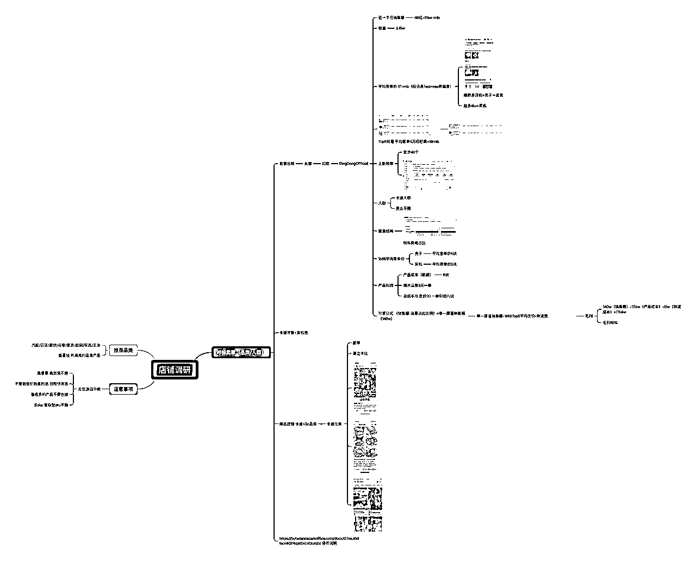

来源：https://xikbp3he4xj.feishu.cn/docx/OhJkddWSAoa6WlxaVmYcruQlnQd
调研全流程思维脑图

调研本土店原因（调研本土店铺 看模式 看打法 看Top5品类属性 看盈利空间）
第一步 选定商品搜索 地区 品类 本土店
第二步 选定对标卖家 看月GMV+销量
为什么看月的而不是半年的，因为半年前的品跟现在不一样，不同品类都会有应季跟趋势 调研这个环节是为了算利润
调研平均客单价是为了算利润+了解这个品类在市场的平均客单价

调研TOP5的商品逻辑是 基本上店铺只有产品爆了才会有利润 产品没爆其实其他的品的销量都是打平或者亏钱的 所以 我们调研top5的产品的选品逻辑+了解他们一个产品挣了多少钱
上新频率在跨境店铺上更加关注 本土其实跟跨境上新频率有一些区别 或者从模式上有很大的区别
明确该卖家的品类玩法跟打法策略
第一步锁定这个单品

第二步 查看单品销售节奏与销售路径
第三步 查看单品销售路径与成交占比

总结模式：店铺类型为本土店 而且是柔京姬品牌，这家店铺可能是品牌自己 也可能是品牌授权贴牌，有可能是跨境备货也有可能是本土生产，但是这类型本土备货海运成本会更高，所以他们可能是本地生产贴的中国牌子 或者是品牌自己海运备货也有可能
总结打法：商品卡成交占比是13% 达人带货占比87% 进一步确定是品牌自己，因为经销商是不会帮品牌干这个事的，所以几乎可以确定 品牌找代工厂 自己卖货，整体路径是 GMV MAX+ 视频投流+达人带货，视频占比71%也就说明 店铺卖家的核心动作有三个 1.投流做基础动销+GMV MAX投放 2 达人产生素材投流 3.找直播团队做直播带货
总结利润，因为是品牌 整体ROI很难估算 今天就只算品牌的商城
目前如果1688常规同款成本在1-3块一瓶 如果东南亚本地代工厂会更便宜，我们假定成本是3块+本土物流成本的话是3块 加起来成本是6块 也就是30泰铢
也就是说他的毛利在83%左右-投流成本 净利润需要数据来测算
目前东南亚本土的毛利 基本也都在50%以上 除非是高频复购的刚需品 东南亚的模式非常多也非常杂 具体要根据实际情况来测算，通过这个卖家我们知道了 模式 打法跟利润，下一步我们要调研无货源，为什么调研本土 是因为 无货源可能只是做东南亚的第一步 接下来我们看看东南亚无货源的利润是如何的
二,跨境店铺调研路径
做跨境店铺调研 首先我们理解透 跨境店 不是靠店铺赚钱 而是靠单品赚钱的，所以 我们检索好后 直接看销量就好，我们就看新品利润即可
1688产品成本6块运费6块 卖价24-36 一单大概10-20的利润 7天买了1383单 也就是单品挣了一万多块钱 纯商品卡自然流 无投流 无达人，这个本质上就是跨境无货源的逻辑，所以其实跨境无货源没有所谓的复杂的调研，前期大量的找品 能赚钱就可以 大规模上品 通过运营的方法来把链接打起来
以上就是TikTok调研全流程，我认为没有比这一步更重要的事儿了 所以大家再去做TikTok的时候 找准核心